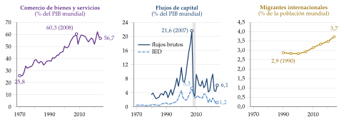
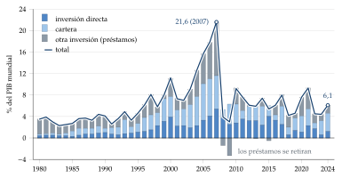
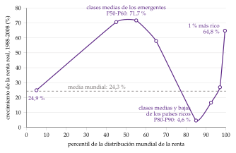
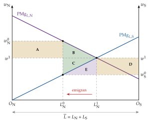
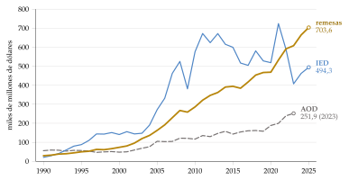
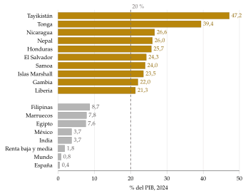
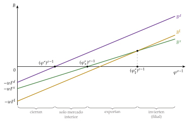
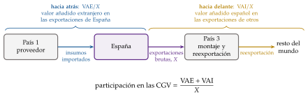
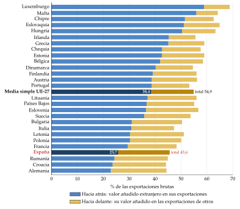

Tema 3.B.18
La nueva globalización económica y financiera. Determinantes y efectos de los movimientos internacionales de factores productivos: movilidad de trabajadores, inversión de cartera e inversión directa, con especial referencia a las cadenas globales de valor.
Nueva globalización, migraciones, inversión de cartera e inversión directa: MacDougall, Helpman-Melitz-Yeaple, OLI y cadenas globales de valor.
Exclusivo Material exclusivo de victorgutierrezmarcos.es y la app Oposición TCEE · DCE. Puedes usarlo libremente para tu estudio personal. No se autoriza su incorporación a otras plataformas, aplicaciones o servicios. Condiciones de uso.
Introducción
Enganche:
«El mundo es un pañuelo», dice el refrán, y las exportaciones españolas lo confirman.
En torno a una cuarta parte de lo que vale lo que España vende fuera es valor añadido de otros países: el 26,6 % en 2022, frente al 23,5 % de 2010 (OCDE, 2025).
Y casi una quinta parte del valor que España exporta viaja dentro de las exportaciones de otros países (Eurostat, 2026).
El pañuelo es más pequeño para las cosas que para las personas: los bienes, el capital y las tareas cruzan fronteras con facilidad, pero solo el 3,7 % de la población mundial vive fuera del país en que nació (Naciones Unidas, Departamento de Asuntos Económicos y Sociales, División de Población, 2025).
Y desde hace unos años el pañuelo se dobla: aranceles entre Estados Unidos y China desde 2018 (Office of the United States Trade Representative, 2026), cadenas de suministro cortadas por la pandemia y las guerras, Gobiernos que quieren producir en casa o «entre amigos». ¿Se acaba la globalización o solo cambia de forma?
Relevancia:
El comercio de bienes y servicios equivale al 57 % del PIB mundial (Banco Mundial, 2026a), y casi la mitad pasa por cadenas globales de valor, en las que cada país hace una parte del producto (Banco Mundial, 2020).
Los factores también se mueven:
la inversión directa mundial fue de 1,6 billones de dólares en 2025 (Conferencia de las Naciones Unidas sobre Comercio y Desarrollo, 2026);1
los emigrantes enviaron a los países de renta baja y media unos 700.000 millones de dólares, más que la inversión directa que esos países reciben (Banco Mundial, 2026e; Fondo Internacional de Desarrollo Agrícola, 2026);
y los flujos de cartera llevan en horas las decisiones de la Reserva Federal a todos los mercados [ver tema 3.B.15].
La globalización reparte sus ganancias de forma desigual, y ese reparto alimenta el rechazo político al comercio y a la inmigración en muchos países avanzados (Rodrik, 2011).
Contextualización:
La globalización es la integración creciente de los mercados nacionales de bienes, servicios, capitales, trabajo y conocimiento, que hace a las economías cada vez más interdependientes.
La nueva globalización es la que empieza hacia 1990: las tecnologías de la información abaratan la coordinación a distancia, la producción se parte en tareas que se reparten entre países, las cadenas globales de valor (CGV), y los flujos brutos de capital se multiplican (R. Baldwin, 2016).
Los movimientos internacionales de factores son los cambios de país del trabajo (las migraciones) y del capital (la inversión de cartera y la inversión directa).
Un mismo argumento sirve para los 3 factores del título:
cada uno va a donde rinde más: el trabajador, a donde el salario \(w\) es mayor; el ahorrador, a donde la renta del capital \(r\) es mayor; la empresa, a donde su beneficio \(B\) es mayor;
y cada uno se mueve menos de lo que predice la teoría, porque moverse cuesta: emigrar, invertir en un país que se conoce mal, montar una filial.
Convención: como en la balanza de pagos, la inversión directa da control o influencia significativa en una empresa de otro país (por convenio, el 10 % o más de los votos), y la inversión de cartera es la compra, sin ese control, de acciones por debajo del umbral y de valores de deuda (Fondo Monetario Internacional, 2009) [ver tema 3.B.11].
Problemática:
¿Qué tiene de nuevo la globalización actual? ¿Está en retroceso?
¿Por qué se mueven los trabajadores y el capital entre países, y por qué se mueven tan poco?
¿Quién gana y quién pierde con esos movimientos, en el país de origen y en el de destino?
¿Qué cambia cuando lo que se mueve ya no son productos enteros, sino tareas?
Estructura:
La exposición va del fenómeno a sus causas y de los factores a las tareas.
En el bloque I, la nueva globalización económica y financiera: cómo se mide, sus oleadas y sus rasgos actuales, incluida su fragmentación.
En el bloque II, los determinantes y efectos de los movimientos de factores: un marco común y, con el mismo patrón, el trabajo, la inversión de cartera y la inversión directa.
En el bloque III, la especial referencia del título, las cadenas globales de valor: cómo se miden, por qué se fragmenta la producción, qué efectos tiene y cómo se están reorganizando.
3.B.18. La nueva globalización económica y financiera. Determinantes y efectos de los movimientos internacionales de factores productivos: movilidad de trabajadores, inversión de cartera e inversión directa, con especial referencia a las cadenas globales de valor
Introducción2′30″
I. La nueva globalización económica y financiera5′
1. Concepto y medición
2. Las oleadas de la globalización
3. Rasgos de la nueva globalización
II. Determinantes y efectos de los movimientos internacionales de factores13′
1. Marco común: por qué se mueven los factores y qué consiguen
2. Movilidad de trabajadores
3. Inversión de cartera
4. Inversión directa
III. Especial referencia a las cadenas globales de valor8′
1. Concepto y medición
2. ¿Por qué se fragmenta la producción? Teoría
3. Determinantes y efectos
4. Riesgos y reconfiguración
Conclusión1′30″
Reparto del cante: introducción, 2′30″; I, 5′ (I.1, 1′30″; I.2, 1′; I.3, 2′30″); II, 13′ (II.1, 2′; II.2, 4′; II.3, 3′; II.4, 4′); III, 8′ (III.1, 2′; III.2, 2′30″; III.3, 2′; III.4, 1′30″), y conclusión, 1′30″. Un solo argumento recorre los 3 factores: cada uno va a donde rinde más, frenado por lo que cuesta moverse. Los 3 factores del bloque II siguen el mismo patrón (determinantes y efectos), fácil de memorizar, y los 2 modelos que se desarrollan son el de MacDougall y el de Helpman, Melitz y Yeaple. Las cadenas globales de valor, la especial referencia del título, tienen su propio bloque. Las cajas grises, las notas al pie y los anexos son para las preguntas del tribunal.
I. La nueva globalización económica y financiera
En el cante (5′): las 3 medidas de la globalización (comercio, finanzas y personas), con la cifra de cada una (1′30″); las oleadas, una frase cada una, con los desagregamientos de Baldwin como hilo (1′); y los 5 rasgos de la nueva globalización, sobre todo el financiero y la fragmentación (2′30″). La historia detallada de cada oleada es de otros temas: aquí basta con su motor y su resultado.
Empezamos por el fenómeno: qué es la globalización, cómo se mide y qué distingue a la actual de las anteriores.
Conclusión anticipada:
Los bienes y el capital están hoy muy integrados; el trabajo, mucho menos.
Lo nuevo no es tanto la cantidad de comercio como su forma, por tareas en lugar de productos, y el tamaño de los flujos financieros brutos.
Desde 2008 la globalización se frena y, desde 2018, se reordena por bloques, pero no retrocede.
I.1. Concepto y medición
Las dimensiones: la globalización tiene 4 caras, y cada una se mide por separado porque avanzan a ritmos distintos:
el comercio de bienes y servicios;
los flujos financieros: inversión directa, inversión de cartera y otra inversión, sobre todo préstamos bancarios;
las migraciones;
y los flujos de información y conocimiento: datos, patentes, tecnología.
El comercio: la suma de exportaciones e importaciones de bienes y servicios pasó del 26 % del PIB mundial en 1970 al 57 % en 2024, con un máximo del 62 % en 2022 (Banco Mundial, 2026a). Solo las exportaciones de mercancías equivalen a algo más de la quinta parte del PIB mundial (Organización Mundial del Comercio, 2026; Banco Mundial, 2026b).
Las cifras brutas cuentan varias veces lo que cruza varias fronteras: un componente que se importa, se monta y se reexporta entra 2 veces en el comercio mundial.
El comercio en valor añadido atribuye cada euro exportado al país donde se generó, y es la base para medir las cadenas globales de valor (III.1) (Johnson y Noguera, 2012) [ver tema 3.A.31].
El comercio de servicios se mide peor, porque no pasa por la aduana. El Acuerdo General sobre el Comercio de Servicios (AGCS o GATS) distingue 4 modos de suministro: transfronterizo, consumo en el extranjero, presencia comercial (que es inversión directa) y presencia de personas físicas [ver tema 3.B.34].
Los flujos financieros: hay 3 medidas, y cada una cuenta una historia distinta:
los flujos netos: el saldo de la cuenta financiera, la otra cara del saldo por cuenta corriente [ver tema 3.B.11];
los flujos brutos: la suma de lo que entra en todos los países, mucho mayor que los netos. Llegaron al 22 % del PIB mundial en 2007, se hundieron con la crisis financiera y desde entonces se mueven entre el 3 y el 9 %: el 6 % en 2024 (gráfico 1) (Fondo Monetario Internacional, 2026, 2024);2
y los stocks, los activos y pasivos exteriores acumulados (la posición de inversión internacional): crecieron muy deprisa entre 2000 y 2007 y, en porcentaje del PIB mundial, apenas han cambiado desde entonces (Fondo Monetario Internacional, 2025; Lane y Milesi-Ferretti, 2018).
Dentro de los flujos, la inversión directa mundial llegó al 5 % del PIB en 2007 y ronda hoy el 1 % (Banco Mundial, 2026c).
Las migraciones: en 2024 vivían fuera de su país de nacimiento 304 millones de personas, el doble que en 1990; pero son solo el 3,7 % de la población mundial, frente al 2,9 % de entonces (Naciones Unidas, Departamento de Asuntos Económicos y Sociales, División de Población, 2025; Organización Internacional para las Migraciones, 2026). El trabajo es, de lejos, el factor menos globalizado.
Los índices sintéticos: resumen todas las dimensiones en un número.
El índice KOF combina dimensiones económicas, sociales y políticas (Gygli et al., 2019).
El de conectividad de DHL, que combina comercio, capital, información y personas, estaba en 2025 en su máximo, el mismo de 2022, pese a los aranceles (Altman y Bastian, 2026).

I.2. Las oleadas de la globalización
El hilo: cada oleada nace de la caída de un coste. R. Baldwin (2016) distingue 3 desagregamientos (unbundlings):
el primero, desde 1820: el vapor y el ferrocarril abaratan el transporte de bienes y separan la producción del consumo;
el segundo, desde 1990: las tecnologías de la información abaratan la coordinación a distancia y separan las fases de la producción, que se reparten entre países;
el tercero, que empieza ahora: la telepresencia permite prestar servicios del trabajo desde otro país sin que el trabajador se mueva.
1870-1914, la primera globalización: el comercio y el capital crecen con el patrón oro, y unos 60 millones de europeos emigran a América entre 1820 y 1914 (Hatton y Williamson, 1998).
Los salarios reales y los precios de la tierra del Viejo y el Nuevo Mundo convergen, como predice la teoría de Heckscher y Ohlin (O’Rourke y Williamson, 1999) [ver tema 3.B.20].
1914-1945, la desglobalización: las guerras, los aranceles, los controles de cambios y las cuotas a la inmigración hunden el comercio y los flujos de capital [ver tema 3.B.20].
1945-1973, Bretton Woods: el comercio se libera en el GATT, pero el capital sigue controlado y el trabajo apenas se mueve fuera de los programas de trabajadores invitados.
El contenedor, desde finales de los 50, multiplica el comercio entre los países desarrollados (Bernhofen, El-Sahli y Kneller, 2016).
1973-2008, la liberalización y la hiperglobalización: los países avanzados liberan sus capitales en los 80 y muchos emergentes en los 90.
Con la entrada de China en la OMC (2001), el comercio crece mucho más deprisa que el PIB: es la hiperglobalización (Subramanian y Kessler, 2013).
La movilidad del capital dibuja una U: alta antes de 1914, mínima con Bretton Woods y otra vez alta desde los 90 (Obstfeld y Taylor, 2004).
Desde 2008, la ralentización: el comercio deja de crecer más que el PIB, los flujos financieros brutos caen y las cadenas dejan de alargarse. The Economist lo llamó slowbalisation (The Economist, 2019). Desde 2018, además, la globalización se reordena por bloques (I.3) [ver tema 3.B.21].
| Etapa | Motor | Bienes | Capital | Personas |
|---|---|---|---|---|
| 1870-1914 Primera globalización |
Vapor, ferrocarril, telégrafo; patrón oro | Crecen y convergen los precios | Muy móvil | Migración masiva a América |
| 1914-1945 Desglobalización |
Guerras y Gran Depresión | Aranceles y cuotas | Controles de cambios | Cuotas a la inmigración |
| 1945-1973 Bretton Woods |
GATT y contenedor | Se liberan entre países avanzados | Controlado | Poco móvil |
| 1973-2008 Hiperglobalización |
Tecnologías de la información; China en la OMC | Crecen más que el PIB; cadenas de valor | Liberalizado; flujos brutos en máximos | Algo más móvil |
| Desde 2008 Ralentización y bloques |
Crisis financiera, guerra comercial, pandemia, geopolítica | Estancados en % del PIB | Caen los flujos brutos | Siguen creciendo despacio |
Fuente: elaboración propia a partir de R. Baldwin (2016) y Obstfeld y Taylor (2004).
I.3. Rasgos de la nueva globalización
Lo que distingue a la globalización actual de la de 1914 se resume en 5 rasgos: las cadenas de valor y los servicios, la globalización financiera, el ascenso de los emergentes, la desigualdad y la fragmentación.
a) Las cadenas globales de valor y los servicios
Comercio de tareas: casi la mitad del comercio mundial pasa por cadenas globales de valor, en las que los insumos cruzan al menos 2 fronteras antes del producto final (Banco Mundial, 2020). Se comercia con tareas, no solo con productos (bloque III).
Servicios: las tecnologías de la información hacen comerciables servicios que antes no lo eran, como la ingeniería, la contabilidad o la programación.
Medidos en valor añadido, los servicios pesan en el comercio mucho más que en las cifras brutas, porque van incorporados en los bienes (diseño, I+D, logística, marketing): es la servicificación de las manufacturas (OCDE, 2023) [ver tema 3.B.11].
b) La globalización financiera
Flujos brutos mucho mayores que los netos: los países compran y venden a la vez activos exteriores, y su posición bruta es varias veces su saldo neto.
Por eso los riesgos para la estabilidad están en los brutos (en qué moneda, a qué plazo, quién debe), y no solo en el saldo corriente (Lane y Milesi-Ferretti, 2018) [ver tema 3.B.11].
La banca global y su repliegue: antes de 2008, buena parte de los flujos brutos eran préstamos entre bancos, que se financiaban en dólares a corto plazo y se apalancaban más cuando el riesgo parecía bajo (Bruno y Shin, 2015).
En 2007 la otra inversión, sobre todo esos préstamos, equivalía al 10 % del PIB mundial; en 2008 y 2009 fue negativa, porque los bancos repatriaron sus préstamos.
Desde entonces pesan más la inversión de cartera y la directa que los préstamos bancarios (gráfico 2) (Fondo Monetario Internacional, 2026).
El papel del dólar: buena parte del comercio se factura en dólares y buena parte de la deuda en divisas se emite en dólares, de modo que las condiciones financieras de Estados Unidos se transmiten al resto del mundo (Gopinath et al., 2020).
El ciclo financiero global: los precios de los activos con riesgo, los flujos brutos y el crédito se mueven a la vez en todo el mundo, en sentido contrario a la aversión global al riesgo, y la política de la Reserva Federal es uno de sus motores (Rey, 2013; Miranda-Agrippino y Rey, 2020) [ver tema 3.A.42].
Para Hélène Rey, con libertad de capitales ni siquiera la flotación aísla del todo a un país de ese ciclo: más que un trilema, un dilema [ver tema 3.B.15].

Fuente: elaboración propia (cálculo propio) a partir de Fondo Monetario Internacional (2026), con el PIB mundial del Banco Mundial. Porcentaje del PIB mundial. Los flujos entre los países de la zona del euro cuentan como internacionales.
c) El ascenso de los emergentes
De proveedores a fábricas: los emergentes, y sobre todo China, pasan de proveer materias primas a montar manufacturas para el mundo, y después a invertir en el exterior. China es hoy el primer exportador de mercancías del mundo (Organización Mundial del Comercio, 2026).
Convergencia: como los emergentes crecen más deprisa, la desigualdad entre países cae desde los 90 (Milanović, 2016) [ver tema 3.B.28].
d) La desigualdad dentro de los países
La curva del elefante: entre 1988 y 2008 las rentas que más crecieron fueron las del centro de la distribución mundial, en torno a un 70 %, sobre todo las de las clases medias de China y de otros emergentes, y las del 1 % más rico (65 %). Las del percentil 80 al 90, casi todas de clases medias y bajas de los países ricos, apenas crecieron un 5 % (gráfico 3) (Lakner y Milanović, 2016) [ver tema 3.B.28].
Su actualización: la forma de elefante no se ha mantenido. Entre 2008 y 2018, según Milanović (2024), crecieron más las rentas cuanto más pobres eran, y el 1 % más rico perdió la trompa; la desigualdad mundial ha bajado de unos 70 a unos 60 puntos de Gini.
Las pérdidas concentradas: en las zonas de Estados Unidos más expuestas a las importaciones chinas cayeron el empleo industrial y los salarios, y el «shock de China» explica en torno a una cuarta parte de la caída del empleo manufacturero entre 1990 y 2007 (D. H. Autor, Dorn y Hanson, 2013) [ver tema 3.B.5].

Fuente: elaboración propia a partir de Lakner y Milanović (2016, cuadro 3). Crecimiento acumulado de la renta real per cápita en dólares PPA de 2005; se representan los 8 grupos de la distribución para los que el artículo da cifras.
e) El rechazo y la fragmentación
Los 3 trilemas: la globalización limita la política nacional, y cada límite tiene su trilema.
El trilema monetario: un país no puede tener a la vez tipo de cambio fijo, libertad de capitales y política monetaria propia [ver tema 3.B.15].
El trilema financiero: no se pueden tener a la vez estabilidad financiera, integración financiera y supervisión nacional, porque el supervisor de cada país no tiene en cuenta el coste que la quiebra de un banco transfronterizo impone a los demás (Schoenmaker, 2011).
El trilema político: no se pueden tener a la vez integración económica profunda, soberanía nacional y democracia, y hay que renunciar a una de las 3 (Rodrik, 2000, 2011).
El rechazo: las pérdidas de la apertura se concentran en sectores, regiones y trabajadores concretos, y alimentan el rechazo al comercio y a la inmigración. En Estados Unidos, la exposición a las importaciones chinas se asocia con una mayor polarización del voto (D. Autor et al., 2020).
La guerra comercial: empezó en 2018, cuando Estados Unidos gravó 4 listas de importaciones chinas y China respondió (Office of the United States Trade Representative, 2026) [ver tema 3.B.7].
Esos aranceles los pagaron casi enteros los consumidores y las empresas de Estados Unidos (Fajgelbaum et al., 2020; Amiti, Redding y Weinstein, 2019).
En 2025 Estados Unidos subió sus aranceles a casi todos sus socios. Medido como derechos recaudados entre importaciones, su arancel efectivo pasó del 2,4 % en 2024 al 7,6 % en 2025, y en agosto de 2026 era del 6,9 % (USAFacts, 2026).
En febrero de 2026 su Tribunal Supremo anuló los aranceles impuestos con la ley de emergencia económica (IEEPA), que se han sustituido por otros con distinta base legal (Jones Day, 2026).
La fragmentación geoeconómica: las políticas industriales y de seguridad económica reorientan el comercio y la inversión hacia los países políticamente afines, el friend-shoring.
«Más vale solo que mal acompañado», dice el refrán: los Gobiernos prefieren comerciar menos, pero con quien se fían.
Desde la invasión de Ucrania, el comercio entre bloques geopolíticos ha caído en torno a un 12 % más que el comercio dentro de cada bloque, y la inversión directa, en torno a un 20 % más (Gopinath et al., 2025).
Algunos países no alineados, como México o Vietnam, hacen de puente: parte del comercio no se acorta, sino que da un rodeo (Gopinath et al., 2025).
Ese repliegue tiene un coste: en los escenarios más extremos del FMI, una fragmentación profunda del comercio costaría hasta el 7 % del PIB mundial a largo plazo (Aiyar et al., 2023).
¿Desglobalización?: los datos no la muestran. Los flujos internacionales siguen cerca de sus máximos (Altman y Bastian, 2026), y el frenazo de las cadenas desde 2008 se debe en buena parte a que ya habían madurado (Antràs, 2020). La globalización no se deshace: se reordena por bloques.
La nueva globalización integra más los bienes, por tareas, y el capital, en bruto, que el trabajo. Sus costes, concentrados en pocos, han provocado una respuesta política que no la deshace, sino que la reordena por bloques.
Recapitulación: hemos visto qué es la nueva globalización, cómo se mide y por qué hoy se frena y se fragmenta. Una vez descrito el fenómeno, pasamos a sus causas: por qué se mueven los factores entre países, qué consiguen y quién gana y quién pierde, empezando por un marco común a todos ellos.
II. Determinantes y efectos de los movimientos internacionales de factores
En el cante (13′): el modelo de MacDougall con su gráfico y su función clave, y la relación entre comercio y factores de palabra (II.1, 2′); el trabajo, con la decisión de Sjaastad, la selección, la gravedad, el Mariel y las remesas (II.2, 4′); la cartera, con la diversificación, el sesgo nacional, los factores push y pull y sus efectos (II.3, 3′); y la inversión directa, con las teorías en una línea cada una, el modelo de Helpman, Melitz y Yeaple con su gráfico y sus efectos (II.4, 4′). Los 3 factores siguen el mismo patrón, determinantes y efectos, que resume la tabla 2.
Una vez descrita la nueva globalización, pasamos a sus causas: por qué se mueven los factores entre países, qué consiguen y quién gana y quién pierde.
Conclusión anticipada:
Cada factor va a donde rinde más, y su movilidad aumenta la producción mundial, pero redistribuye: gana el factor que se mueve y el que lo complementa en destino, y pierde el que compite con él.
El trabajo se mueve poco, porque emigrar cuesta mucho; la inversión de cartera se mueve mucho, pero se diversifica menos de lo que aconseja la teoría y sigue al ciclo financiero global; la inversión directa la hacen las empresas más productivas y es el flujo más estable.
II.1. Marco común: por qué se mueven los factores y qué consiguen
Los 3 factores del título se pueden estudiar con un mismo modelo, el de MacDougall (1960), que se pensó para la inversión extranjera en Australia y que, con el trabajo como factor móvil, es el modelo de referencia de la economía de la inmigración (Borjas, 2020, cap. 8).
a) Idea
Si un factor rinde más en un país que en otro, moverlo aumenta la producción mundial: es la misma lógica que la del comercio, pero con los factores en lugar de los bienes.
El modelo responde a 2 preguntas: ¿cuánto gana el mundo cuando un factor se mueve? y ¿quién gana y quién pierde dentro de cada país?
b) Modelo
i) Supuestos
Hay 2 países, Norte (\(\mathrm N\)) y Sur (\(\mathrm S\)), que producen un mismo bien con capital y trabajo, con rendimientos constantes a escala y productividad marginal del trabajo decreciente.
El capital de cada país está fijo. El trabajo es homogéneo y su total, \(\overline L=L_{\mathrm N}+L_{\mathrm S}\), está dado.
Hay competencia perfecta: el salario es la productividad marginal del trabajo, \(w=\mathrm{PMg}_L\), y el resto del producto es la renta del capital, \(r\) (aquí, la remuneración del capital, no un tipo de interés).
El Norte tiene más capital por trabajador: al principio, \(w^0_{\mathrm N}>w^0_{\mathrm S}\).
Emigrar no cuesta nada.
ii) Desarrollo
El equilibrio: los trabajadores pasan del Sur al Norte mientras el salario del Norte sea mayor, hasta que se igualan los 2 salarios (gráfico 4):
\[w_{\mathrm N}=\mathrm{PMg}_{L,\mathrm N}(L_{\mathrm N})=\mathrm{PMg}_{L,\mathrm S}(\overline L-L_{\mathrm N})=w_{\mathrm S}=w^1\tag{1}\]
La ganancia mundial: cada trabajador que cambia de país deja de producir \(\mathrm{PMg}_{L,\mathrm S}\) y pasa a producir \(\mathrm{PMg}_{L,\mathrm N}\), que es mayor. La producción mundial aumenta en el triángulo entre las 2 curvas, las áreas B y C del gráfico: \[\tag{2} \Delta Y_{\mathrm N}+\Delta Y_{\mathrm S}=\int_{L^0_{\mathrm N}}^{L^1_{\mathrm N}}\Big[\mathrm{PMg}_{L,\mathrm N}(L)-\mathrm{PMg}_{L,\mathrm S}(\overline L-L)\Big]\,dL>0 .\]
El reparto en el Norte, el país de destino:
los trabajadores nativos pierden el área A, porque su salario baja de \(w^0_{\mathrm N}\) a \(w^1\);
los propietarios del capital ganan A y además B, porque cada máquina tiene ahora más trabajadores;
el saldo para los nativos en conjunto es B, positivo y pequeño: es el excedente de la inmigración (Borjas, 1995).
El reparto en el Sur, el país de origen:
los trabajadores que se quedan ganan el área D, porque su salario sube de \(w^0_{\mathrm S}\) a \(w^1\);
los propietarios del capital pierden D y además E.
Los emigrantes ganan C y E: cobran \(w^1\) en lugar de \(w^0_{\mathrm S}\).

Fuente: elaboración propia a partir de MacDougall (1960) y Borjas (2020, cap. 8).
El tamaño del excedente de la inmigración
Con rendimientos constantes, el excedente de la inmigración, en proporción del PIB, es aproximadamente \(-\tfrac12\,s_L\,\varepsilon_{w,L}\,(L^{\mathrm{inm}}/L)^2\), donde \(s_L\) es la participación del trabajo en la renta, \(\varepsilon_{w,L}<0\) la elasticidad del salario respecto del empleo y \(L^{\mathrm{inm}}/L\) la proporción de inmigrantes (Borjas, 1995).
Con \(s_L=0{,}7\), \(\varepsilon_{w,L}=-0{,}3\) y un 10 % de inmigrantes, el excedente es en torno al 0,1 % del PIB, la cifra de George Borjas para Estados Unidos. La redistribución de los trabajadores a los propietarios del capital, el área A, es mucho mayor.
iii) Implicaciones
La movilidad de los factores es eficiente, pero sin compensaciones no es una mejora de Pareto: crea ganadores y perdedores dentro de cada país, y eso explica la economía política de la inmigración y de la inversión extranjera [ver tema 3.A.22].
El mismo gráfico, con el capital en el eje horizontal y su remuneración \(r\) en los verticales, es el de la inversión extranjera: en el país que recibe capital ganan los trabajadores y pierden los propietarios del capital local, y en el que lo exporta, al revés [ver tema 3.B.10].
c) Extensiones
Los costes de moverse: si emigrar cuesta, los salarios no llegan a igualarse; la diferencia que queda compensa el coste de emigrar (II.2).
¿Comercio o factores? Sustitutivos: en el modelo de Heckscher y Ohlin, el comercio de bienes puede igualar las remuneraciones sin que los factores se muevan. Y, al revés, si un arancel frena el comercio y el capital puede moverse, el capital va a donde es escaso, crece allí la producción del bien que lo usa con intensidad y el comercio desaparece (Mundell, 1957) [ver tema 3.B.5].
¿Comercio o factores? Complementarios: si el comercio no nace de las dotaciones, sino de diferencias de tecnología o de economías de escala, el factor se mueve hacia el país que ya tiene ventaja en el bien que lo usa, y el comercio aumenta (Markusen, 1983). Es lo que se ve en las cadenas de valor, donde la inversión directa y el comercio de bienes intermedios crecen juntos (III).
d) Evidencia empírica
En la primera globalización, la emigración masiva de Europa a América explica buena parte de la convergencia de los salarios reales entre el Viejo y el Nuevo Mundo (O’Rourke y Williamson, 1999).
Hoy los salarios de trabajadores parecidos siguen siendo muy distintos entre países: el trabajo está lejos del equilibrio de MacDougall. La evidencia de los efectos se ve con cada factor (II.2, II.4).
e) Valoración
La ganancia potencial es enorme: según los estudios que recoge Clemens (2011), quitar las barreras a la movilidad del trabajo podría aumentar el PIB mundial entre un 67 y un 147 %, mucho más que quitar las que quedan al comercio o al capital. Es el triángulo de MacDougall a escala mundial.
Pero el modelo es estático: trabajo homogéneo, capital fijo y sin costes de moverse. Exagera la caída de los salarios a corto plazo y no ve los efectos sobre la demanda, la innovación ni las cuentas públicas.
Relajar esos supuestos es lo que hace la literatura de cada factor, empezando por el trabajo.
II.2. Movilidad de trabajadores
Con el marco común, pasamos al factor que menos se mueve: el trabajo. En 2024 vivían fuera de su país de nacimiento 304 millones de personas, el 3,7 % de la población mundial (I.1) (Naciones Unidas, Departamento de Asuntos Económicos y Sociales, División de Población, 2025).
Estados Unidos es el primer destino, con 52 millones de inmigrantes, seguido de Alemania y Arabia Saudí (Naciones Unidas, Departamento de Asuntos Económicos y Sociales, División de Población, 2025).
En España, a mediados de 2026, uno de cada cinco residentes había nacido en el extranjero: 10,3 millones de 49,8 (Instituto Nacional de Estadística, 2026b).
a) Determinantes
i) La decisión individual
La diferencia de salarios: Hicks (1932) ya la señaló como la causa principal de las migraciones. Es la fuerza del modelo de MacDougall.
«Nadie es profeta en su tierra», dice el refrán: el mismo trabajador, con la misma formación, rinde y cobra mucho más en un país con más capital y mejores instituciones.
Emigrar es invertir en capital humano: para Sjaastad (1962), emigrar compensa si el valor actual de la mejora de los ingresos supera el coste de emigrar, \(c_m\) (el viaje, el idioma, la separación de la familia, los trámites): \[\tag{3} \sum_{t=1}^{T}\frac{w_{\mathrm N,t}-w_{\mathrm S,t}}{(1+\rho)^t}>c_m ,\] donde \(w_{\mathrm N,t}\) y \(w_{\mathrm S,t}\) son los salarios en destino y en origen, \(\rho\) la tasa de descuento y \(T\) los años de vida laboral que quedan [ver tema 3.A.25].
Por eso emigran sobre todo los jóvenes, que tienen más años para recuperar la inversión.
Y por eso se emigra a destinos cercanos o con compatriotas, que abaratan \(c_m\).
¿Quién emigra? La selección: Borjas (1987), con el modelo de elección de ocupación de Roy (1951), muestra que los que emigran no son una muestra al azar.
Si la cualificación se paga más en destino que en origen, porque allí la desigualdad salarial es mayor, emigran los más cualificados: es la selección positiva.
Si se paga menos, emigran los menos cualificados: es la selección negativa.
Por eso la emigración de países muy desiguales hacia otros más igualitarios tiende a ser de menor cualificación.
ii) Los determinantes agregados
La gravedad de las migraciones: como en el comercio, los flujos entre 2 países crecen con su tamaño y caen con la distancia. Un modelo de gravedad explica más de la mitad de los flujos: emigran más los jóvenes de países pobres y en guerra hacia países cercanos, con la misma lengua o un pasado colonial común, y donde ya hay compatriotas (Fondo Monetario Internacional, 2020).
La red de compatriotas ya instalados es uno de los determinantes más fuertes: informa, acoge y abarata el coste de emigrar.
El clima actúa sobre todo a través de la renta, y los desastres naturales añaden un efecto pequeño.
Las restricciones legales a la entrada reducen los flujos, pero no los anulan.
La «joroba» de la emigración: hasta una renta media, el desarrollo de un país pobre aumenta su emigración, porque más familias pueden pagar el coste de emigrar; solo después la reduce (Clemens, 2014) [ver tema 3.B.29].
España: las redes y la lengua explican el peso de América Latina entre sus inmigrantes (Instituto Nacional de Estadística, 2026b).
b) Efectos
i) En el país de destino
El capital se ajusta: a largo plazo, la inversión crece hasta recuperar el capital por trabajador, y con rendimientos constantes el salario medio vuelve a su nivel. La caída del salario de MacDougall es de corto plazo (Borjas, 2020, cap. 8).
El trabajo no es homogéneo: los inmigrantes compiten con los trabajadores de cualificación parecida, que son sustitutivos, y complementan a los demás.
Por grupos de educación y experiencia, un aumento del 10 % de la oferta de un grupo baja su salario entre un 3 y un 4 % (Borjas, 2003).
Si nativos e inmigrantes del mismo grupo no son sustitutivos perfectos, el efecto sobre los nativos es casi nulo y recae sobre los inmigrantes anteriores (Ottaviano y Peri, 2012).
Los nativos se desplazan hacia tareas de comunicación, en las que tienen ventaja comparativa, y dejan a los inmigrantes las manuales (Peri y Sparber, 2009).
Más demanda e innovación: los inmigrantes también consumen, lo que desplaza la demanda de trabajo, y los cualificados innovan más que la media: un punto más de inmigrantes universitarios en la población eleva las patentes por habitante entre un 9 y un 18 % (Hunt y Gauthier-Loiselle, 2010).
Las cuentas públicas: en los países de la OCDE, el efecto fiscal neto de la inmigración es pequeño, en torno a \(\pm0{,}5\) % del PIB, y depende sobre todo de la edad y del empleo de los inmigrantes (OCDE, 2013).
En el agregado: en las economías avanzadas, un aumento de la inmigración de un punto del empleo eleva la producción casi un 1 % al cabo de 5 años, sobre todo por la productividad (Fondo Monetario Internacional, 2020).
El ajuste en una unión monetaria: la movilidad del trabajo es uno de los mecanismos que absorben los choques regionales cuando no hay tipo de cambio; en Estados Unidos, la emigración entre estados es el principal (Blanchard y Katz, 1992) [ver tema 3.B.16].
ii) La evidencia: el éxodo del Mariel
El problema: comparar ciudades con más y menos inmigrantes no identifica el efecto, porque los inmigrantes van a donde hay trabajo. Hace falta una llegada que no dependa del mercado de trabajo de destino, un experimento natural [ver tema 3.B.28].
El experimento: el éxodo del Mariel (1980) llevó a Estados Unidos a unos 125.000 cubanos y aumentó en torno a un 7 % la población activa de Miami. Card (1990) compara Miami con ciudades parecidas (Atlanta, Houston, Los Ángeles y Tampa-San Petersburgo) y no encuentra efectos apreciables sobre los salarios ni el paro de los trabajadores poco cualificados [ver tema 3.A.25].
David Card recibió el Nobel en 2021, junto a Joshua Angrist y Guido Imbens, por estos métodos (Nobel Prize Outreach, 2021).
El debate posterior:
Borjas (2017), con los varones no hispanos sin estudios secundarios, sí encuentra una caída fuerte de sus salarios en Miami.
Peri y Yasenov (2019), con un control sintético, una media ponderada de ciudades que reproduce la Miami de antes, no la encuentran.
Clemens y Hunt (2019) muestran que la diferencia viene de un cambio en la composición de la pequeña muestra de Borjas, que en 1980 incorporó a más trabajadores negros de salarios bajos.
La reacción política: con la llegada de europeos a las ciudades de Estados Unidos entre 1910 y 1930, Tabellini (2020) encuentra que la inmigración subió el empleo y la ocupación de los nativos y, a la vez, provocó una reacción contra ella: menos gasto público y más apoyo a las restricciones. Las ganancias económicas no evitan el rechazo.
iii) En el país de origen
La fuga de cerebros: si emigran los más formados, el país pierde capital humano y lo que invirtió en su educación.
La ganancia de cerebros: la posibilidad de emigrar sube el rendimiento esperado de estudiar, y se forman más personas de las que acaban yéndose; los que vuelven traen conocimientos y las diásporas abren redes de comercio e inversión.
El saldo es positivo en los países grandes con poca emigración cualificada y negativo en los pequeños que pierden a buena parte de sus médicos o ingenieros (Beine, Docquier y Rapoport, 2001; Docquier y Rapoport, 2012).
Las remesas: son la mayor entrada de recursos exteriores de los países de renta baja y media, unos 700.000 millones de dólares en 2025, más que la inversión directa que reciben (desde 2022) y mucho más que la ayuda oficial al desarrollo (gráfico 5) (Banco Mundial, 2026e; Fondo Internacional de Desarrollo Agrícola, 2026).
En algunos países pequeños las remesas superan la quinta parte del PIB, y en Tayikistán casi la mitad (Banco Mundial, 2026e). En 2024 lo hacían en 10 países, con Tayikistán (47 %), Tonga (39 %) y Nicaragua (27 %) a la cabeza (gráfico 6).
Son más estables que los flujos de capital y suelen ser anticíclicas, porque se envía más cuando la familia lo necesita; reducen la pobreza y financian educación y salud.
Pero pueden apreciar el tipo de cambio real, con síntomas de enfermedad holandesa, y desanimar la participación laboral de quien las recibe.
En la balanza de pagos son renta secundaria [ver tema 3.B.11].


Fuente: elaboración propia a partir de Banco Mundial (2026e).
Recapitulación: el trabajo se mueve poco porque moverse cuesta mucho. Cuando se mueve, gana el mundo y gana el emigrante; los efectos sobre los nativos son pequeños en media, pero concentrados en algunos grupos, y eso alimenta el rechazo. Una vez estudiado el trabajo, pasamos al capital, que se mueve mucho más, empezando por la inversión de cartera.
II.3. Inversión de cartera
La inversión de cartera es la compra, sin control, de acciones y de valores de deuda de otro país. Su lógica es distinta de la de la inversión directa: busca rentabilidad y reparto del riesgo, no producir.
a) Determinantes
i) La rentabilidad: el enfoque intertemporal
La idea: en el enfoque intertemporal, un país con capital escaso y buenas oportunidades de inversión tiene un tipo de interés de autarquía mayor que el mundial, \(r^A>r^*\). Importa capital, invierte más de lo que ahorra y suaviza su consumo; uno abundante en capital lo exporta (anexo A) (Obstfeld y Rogoff, 1995) [ver tema 3.B.12].
Su límite: es una teoría de los flujos netos y de un solo activo sin riesgo. Dice hacia dónde debería ir el ahorro, pero no por qué un país compra y vende a la vez acciones y bonos del exterior.
¿Va el capital a donde rinde más? [ver tema 3.B.12]
Menos de lo que predice el modelo intertemporal, por 3 puzles.
Feldstein y Horioka: la inversión de cada país sigue a su ahorro casi punto por punto, como si el capital no se moviera (Feldstein y Horioka, 1980).
Lucas: el capital no va de los países ricos a los pobres, porque, con el capital humano, el diferencial de rendimiento entre la India y Estados Unidos baja de 58 veces a 5 (Lucas, 1990).
La asignación: entre los emergentes, los que más crecen reciben menos capital neto (Gourinchas y Jeanne, 2013) [ver tema 3.B.29].
ii) El riesgo: la diversificación internacional
La idea: la inversión de cartera es, sobre todo, reparto del riesgo. El riesgo de una cartera depende de cómo se mueven sus activos entre sí, no solo de lo arriesgado que es cada uno: si los mercados de 2 países no se mueven a la vez, combinarlos reduce el riesgo sin reducir la rentabilidad esperada (Markowitz, 1952) [ver tema 3.B.23].3
Por qué entre países: las bolsas de países distintos están menos correlacionadas que las acciones de un mismo país, y la diversificación internacional reduce el riesgo mucho más que la nacional (Grubel, 1968; Solnik, 1974).
El sesgo nacional (home bias): los inversores tienen mucho menos activo extranjero del que aconseja la teoría.
A finales de los 80, los de Estados Unidos y Japón tenían más del 90 % de sus acciones en empresas de su país, cuando sus bolsas eran menos de la mitad de la capitalización mundial (French y Poterba, 1991).
Es uno de los 6 grandes puzles de la macroeconomía internacional (Obstfeld y Rogoff, 2000).
Las explicaciones del sesgo (Coeurdacier y Rey, 2013):
los costes de transacción y de información: se conoce mejor lo cercano;
la cobertura de otros riesgos: las acciones nacionales cubren bien el riesgo del tipo de cambio real, aunque la renta del trabajo, que no se puede diversificar, aconsejaría tener menos activos nacionales, no más (Baxter y Jermann, 1997);
el gobierno corporativo débil en otros países y los sesgos de comportamiento, como la familiaridad.
El sesgo ha bajado con la integración financiera, sobre todo en la zona del euro, pero persiste.
iii) Los factores push y pull
La distinción: Calvo, Leiderman y Reinhart (1993), con la oleada de capital hacia América Latina de principios de los 90, separaron 2 tipos de determinantes:
los factores push, de empuje, externos al país: los tipos de interés y la liquidez mundiales, la aversión global al riesgo y los precios de las materias primas;
los factores pull, de atracción, internos: el crecimiento, los tipos de interés, la apertura, el desarrollo financiero, las reservas y las instituciones.
Mandan los factores globales: los episodios de entradas extraordinarias y de paradas bruscas se explican sobre todo por el riesgo global (Forbes y Warnock, 2012). Tras la crisis de 2008, en los emergentes pesan los 2 tipos de factores (Hannan, 2017).
«El dinero es cobarde», dice el refrán: cuando sube la aversión global al riesgo o los tipos de Estados Unidos, la cartera sale a la vez de muchos países, aunque nada haya cambiado en ellos. Es la cara de cartera del ciclo financiero global (I.3).
b) Efectos
Los beneficios teóricos: una mejor asignación del ahorro mundial, el reparto del riesgo (el consumo depende menos de la producción propia), la disciplina sobre las políticas y el desarrollo del sistema financiero.
La evidencia: los beneficios son difíciles de encontrar.
No hay un efecto robusto de la apertura financiera sobre el crecimiento; aparecen beneficios indirectos solo por encima de ciertos umbrales de desarrollo financiero y de calidad institucional (Kose et al., 2009).
Tampoco se reparte bien el riesgo: el consumo de los países está menos correlacionado entre sí que su producción, al revés de lo que predice la teoría (Obstfeld y Rogoff, 2000).
Y la entrada de capital puede empeorar la asignación: en el sur de Europa, tras el euro, el capital barato fue a las empresas con más patrimonio, no a las más productivas, y la productividad total de los factores cayó (Gopinath et al., 2017).
Los costes: los flujos de cartera son procíclicos y volátiles.
Una parada súbita (sudden stop) de las entradas obliga a un ajuste violento de la cuenta corriente (Calvo, 1998).
Una apertura rápida, sin regulación ni supervisión, ha precedido a muchas crisis [ver tema 3.B.17].
La composición importa: la inversión directa es el flujo más estable y el que menos se retira en las crisis; la cartera en deuda y los préstamos bancarios son los más volátiles (Levchenko y Mauro, 2007) [ver tema 3.B.12].
La política: la literatura reciente acepta las medidas de gestión de los flujos y las macroprudenciales para moderar las entradas, porque los beneficios de abrir del todo la cuenta financiera no siempre se ven en los datos (Wei, 2018) [ver tema 3.B.15].
Recapitulación: la cartera se mueve mucho, pero se diversifica poco y sigue al ciclo financiero global; sus beneficios son difíciles de encontrar y sus riesgos, fáciles. Pasamos a la otra forma de mover capital, la inversión directa, que es la decisión de una empresa de producir en otro país.
II.4. Inversión directa
La inversión directa es la única de las 3 que tiene detrás una teoría de la empresa: quien la hace es una empresa multinacional, que decide producir fuera en lugar de exportar o de vender su tecnología.
a) Determinantes
Concepto: la inversión extranjera directa (IED) da a un residente el control o una influencia significativa en una empresa de otra economía, por convenio con el 10 % o más de los votos. Incluye las participaciones, los beneficios reinvertidos y la deuda entre empresas del grupo (Fondo Monetario Internacional, 2009) [ver tema 3.B.11].
Formas:
según cómo se entra: greenfield, con instalaciones nuevas, o fusiones y adquisiciones transfronterizas, comprando empresas que ya existen [ver tema 3.B.4];
según para qué: horizontal, si la filial hace lo mismo que la matriz para vender en el mercado de destino; vertical, si hace una fase de la producción donde es más barata; y de plataforma de exportación, si vende sobre todo a terceros países (Ekholm, Forslid y Markusen, 2007);
en los servicios, el modo 3 del Acuerdo General sobre el Comercio de Servicios, la presencia comercial, es inversión directa [ver tema 3.B.34].
Los hechos:
La inversión directa mundial creció un 6 % en 2025, hasta 1,6 billones de dólares, tras dos años de caída, pero muy concentrada: los 20 primeros receptores se llevaron más del 80 % y Estados Unidos siguió siendo el primero (Conferencia de las Naciones Unidas sobre Comercio y Desarrollo, 2026).
Los sectores estratégicos (centros de datos, semiconductores, minerales críticos, energías limpias) fueron el 44 % del valor de los proyectos nuevos, frente al 16 % de 2020 (Conferencia de las Naciones Unidas sobre Comercio y Desarrollo, 2026, cap. III).
Una parte de la IED solo pasa por entidades sin actividad real en centros financieros; por eso la UNCTAD da también la cifra sin esos flujos de paso, que en 2025 creció un 4 % (Conferencia de las Naciones Unidas sobre Comercio y Desarrollo, 2026).
La mayor parte de la IED va de países ricos a países ricos y es horizontal (Carr, Markusen y Maskus, 2001).
b) Teorías
Ventajas propias: una empresa extranjera tiene desventajas frente a las locales (el idioma, las leyes, las redes). Si invierte, es porque tiene algo que lo compensa, una tecnología, una marca o una capacidad de gestión (Hymer, 1976).
La internalización: los activos intangibles se venden mal en el mercado, porque es difícil fijar su precio y protegerlos de la copia, y la empresa prefiere explotarlos dentro de su propiedad (Buckley y Casson, 1976). Es la decisión de hacer o comprar de los costes de transacción, entre países [ver tema 3.A.15].
El paradigma ecléctico (OLI): Dunning (1977, 1980) lo resume en 3 ventajas que tienen que darse a la vez:
de propiedad (ownership): un activo propio que compense ser extranjero;
de localización (location): que convenga producir fuera, por el mercado, los costes o los aranceles, y no exportar;
de internalización (internalization): que convenga hacerlo dentro de la empresa y no licenciar el activo a una local.
El ciclo del producto: el innovador exporta primero y, cuando el producto madura y se estandariza, produce en el exterior (Vernon, 1966) [ver tema 3.B.6].
La IED vertical: Helpman (1984) separa la producción en servicios centrales (I+D, diseño, marca), intensivos en trabajo cualificado y que sirven a la vez a varias plantas, y fabricación, intensiva en trabajo poco cualificado. Si los países difieren mucho en sus dotaciones, la empresa deja los servicios centrales en el país rico y lleva la fabricación al pobre.
El modelo de capital-conocimiento reúne los 2 motivos: la IED horizontal domina entre países parecidos y grandes, y la vertical, entre países distintos (Markusen, 1984; Carr, Markusen y Maskus, 2001).
La teoría moderna explica, además, qué empresas invierten, con empresas de productividad distinta.
El modelo de Helpman, Melitz y Yeaple (2004)
a) Idea
La IED horizontal resuelve la disyuntiva entre proximidad y concentración: producir cerca del cliente ahorra transporte y aranceles, y concentrar la producción en una planta aprovecha las economías de escala (Horstmann y Markusen, 1992; Brainard, 1997).
Helpman, Melitz y Yeaple (2004) llevan esa disyuntiva al modelo de Melitz: ¿qué empresas exportan y cuáles abren filiales? [ver tema 3.B.6]
b) Modelo
i) Supuestos
Los del modelo de Melitz: competencia monopolística con preferencias CES, elasticidad de sustitución \(\sigma>1\) entre variedades, un solo factor, el trabajo, con salario \(w\), y empresas que difieren en su productividad \(\varphi\) [ver tema 3.B.6].
Hay 2 países iguales. Para vender en el otro, la empresa elige entre 2 formas:
exportar: paga un coste fijo \(wF^x\) y el coste iceberg \(\tau>1\) en cada unidad;
invertir: abre una filial, con un coste fijo \(wF^{\mathrm I}\) mayor, y se ahorra el transporte.
ii) Desarrollo
Las rectas del beneficio: con un margen constante, el beneficio de servir el mercado exterior es una recta en \(\varphi^{\sigma-1}\), con el mismo factor de demanda que el beneficio interior, \(B^d\) (gráfico 7):
la de exportar, \(B^x\), parte de \(-wF^x\) y su pendiente es \(\tau^{1-\sigma}<1\) veces la de la filial, porque el transporte encarece lo que se vende;
la de la filial, \(B^{\mathrm I}\), parte más abajo, de \(-wF^{\mathrm I}\), pero es más empinada: tiene la misma pendiente que \(B^d\).
Los umbrales: exporta la empresa con \(B^x(\varphi)\geq0\), y abre filial la que gana más con ella que exportando, \(B^{\mathrm I}(\varphi)\geq B^x(\varphi)\). Si el coste fijo de la filial es lo bastante mayor que el de exportar, las empresas quedan ordenadas por su productividad:
\[F^{\mathrm I}>\tau^{\sigma-1}F^x>F^d\quad\Longrightarrow\quad\varphi^*<\varphi^*_x<\varphi^*_{\mathrm I}\tag{4}\]
La ordenación:
las menos productivas cierran (\(\varphi<\varphi^*\));
las siguientes venden solo en su país (\(\varphi^*\leq\varphi<\varphi^*_x\));
las siguientes exportan (\(\varphi^*_x\leq\varphi<\varphi^*_{\mathrm I}\));
y las más productivas abren filiales (\(\varphi\geq\varphi^*_{\mathrm I}\)): solo ellas venden lo bastante para que el ahorro en transporte compense el mayor coste fijo.
«Ver los toros desde la barrera», dice el refrán: exportar es ver el mercado desde la barrera; invertir es bajar al ruedo, y solo lo hacen las empresas más productivas.

Fuente: elaboración propia a partir de Helpman, Melitz y Yeaple (2004).
El umbral de la inversión directa, paso a paso
Con países simétricos y \(\Omega\) el factor de demanda común a las 3 rectas, \(B^x(\varphi)=\tau^{1-\sigma}\,\Omega\,\varphi^{\sigma-1}-wF^x\) y \(B^{\mathrm I}(\varphi)=\Omega\,\varphi^{\sigma-1}-wF^{\mathrm I}\).
El umbral de exportación cumple \(B^x(\varphi^*_x)=0\): \((\varphi^*_x)^{\sigma-1}=\tau^{\sigma-1}wF^x/\Omega\).
El de la filial cumple \(B^{\mathrm I}(\varphi^*_{\mathrm I})=B^x(\varphi^*_{\mathrm I})\): \((\varphi^*_{\mathrm I})^{\sigma-1}=w\,(F^{\mathrm I}-F^x)/[\Omega\,(1-\tau^{1-\sigma})]\).
Dividiendo, \(\left(\varphi^*_{\mathrm I}/\varphi^*_x\right)^{\sigma-1}=(F^{\mathrm I}-F^x)/[(\tau^{\sigma-1}-1)F^x]\), que es mayor que 1 si y solo si \(F^{\mathrm I}>\tau^{\sigma-1}F^x\). La otra desigualdad, \(\varphi^*_x>\varphi^*\) si \(\tau^{\sigma-1}F^x>F^d\), es la del modelo de Melitz [ver tema 3.B.6]. ∎
iii) Implicaciones
La IED pesa más frente a las exportaciones en los sectores con costes de comerciar altos, con costes fijos de planta bajos y con más dispersión de la productividad entre empresas.
Un arancel alto, como el exterior común de una unión aduanera, empuja a las empresas de fuera a producir dentro: es la IED de sorteo del arancel (tariff jumping) [ver tema 3.B.10].
Las mismas empresas exportan e invierten, y la promoción exterior apoya las 2 cosas [ver tema 3.B.8].
c) Extensiones
Con empresas multiproducto, a la empresa le conviene producir en el extranjero otras de sus variedades sin canibalizar la que hace en casa, y la IED recíproca no elimina el comercio intraindustrial (R. E. Baldwin y Ottaviano, 2001).
Si la filial no se monta para vender allí, sino para hacer una fase de la producción, la decisión pasa a ser de organización de la cadena (III.2).
d) Evidencia empírica
Con datos de Estados Unidos, las multinacionales son en torno a un 15 % más productivas que las exportadoras, y las ventas de las filiales pesan más frente a las exportaciones en los sectores con más costes de transporte y menos economías de escala de planta (Helpman, Melitz y Yeaple, 2004).
e) Valoración
Explica bien qué empresas invierten y en qué sectores, pero deja fuera la IED vertical y la decisión de hacer o comprar, que son las que dan lugar a las cadenas de valor (Antràs y Yeaple, 2014).
c) Efectos
En el país de destino:
llegan capital, empleo, exportaciones e ingresos fiscales, y, con el gráfico de MacDougall aplicado al capital, ganan los trabajadores y pierden los propietarios del capital local (II.1);
los desbordamientos tecnológicos entre empresas del mismo sector son pequeños o negativos, porque la multinacional les quita mercado (Aitken y Harrison, 1999);
hacia sus proveedores locales son positivos, porque les exige calidad y les transmite tecnología (Javorcik, 2004);
hay riesgos: el desplazamiento de las empresas locales y el traslado de beneficios a jurisdicciones de baja tributación mediante precios de transferencia, deuda intragrupo e intangibles [ver tema 4.B.18].
En el país de origen:
el empleo y la inversión de las filiales en el exterior y los de la matriz en casa crecen juntos: son complementarios, no sustitutivos (Desai, Foley y Hines, 2009);
la deslocalización de las fases menos cualificadas sube la prima salarial de la cualificación en los 2 países, porque lo que sale es poco cualificado para el rico y relativamente cualificado para el pobre (Feenstra y Hanson, 1997).
La política: los Gobiernos compiten por atraer inversión directa y promueven la de sus empresas en el exterior [ver tema 3.B.8].
Recapitulación: la IED la hacen las mejores empresas, para estar cerca del cliente o para abaratar costes, y es el flujo de capital más estable. Su forma más moderna es repartir las fases de la producción entre países.
| Trabajo | Inversión de cartera | Inversión directa | |
|---|---|---|---|
| Va a donde rinde más |
El salario, \(w\) | La renta del capital, \(r\), y el riesgo | El beneficio de la empresa, \(B\) |
| Determinantes | Diferencia de salarios frente al coste de emigrar (Sjaastad); selección (Borjas); redes, distancia, lengua, demografía y conflictos (gravedad) | Rentabilidad (enfoque intertemporal); diversificación, frenada por el sesgo nacional; factores push y pull | Ventajas OLI; proximidad frente a concentración; diferencias de costes (vertical); productividad (HMY) |
| Efectos en destino | Más producción; poco efecto en media sobre los salarios, negativo en los sustitutivos; innovación; efecto fiscal pequeño | Financiación más barata; volatilidad y paradas súbitas | Capital, empleo y exportaciones; desbordamientos hacia los proveedores |
| Efectos en origen | Remesas; fuga y ganancia de cerebros; suben los salarios de los que se quedan | Reparto del riesgo, limitado por el sesgo nacional | Empleo de la matriz complementario; sube la prima de la cualificación |
Fuente: elaboración propia.
Los 3 factores van a donde rinden más, frenados por lo que cuesta moverse. Su movilidad aumenta la producción mundial, pero redistribuye la renta dentro de cada país: ahí está el origen del rechazo.
Recapitulación: hemos visto por qué se mueven el trabajo, la cartera y la inversión directa, y qué efectos tienen. La inversión directa vertical lleva al último paso: ya no se mueve un factor, sino una fase de la producción. Pasamos a las cadenas globales de valor.
III. Especial referencia a las cadenas globales de valor
En el cante (8′): la definición, las causas y la medición, con el esquema de los 3 países, la función clave del índice de participación y la cifra de España (III.1, 2′); la teoría, con el comercio de tareas y la decisión de hacer o comprar entre países en su tabla de 4 casillas (III.2, 2′30″); los determinantes y los efectos, con la curva de la sonrisa (III.3, 2′); y los riesgos y la reconfiguración, con lo que dicen los datos (III.4, 1′30″).
Una vez estudiados los factores, pasamos a la especial referencia del título: lo que hoy se mueve entre países ya no son solo bienes o factores, sino fases de la producción.
Conclusión anticipada:
En las cadenas globales de valor cada país se especializa en tareas, y la empresa decide a la vez dónde hace cada una y si la hace ella o un proveedor.
Las cadenas han dado crecimiento a quien se ha integrado en ellas, pero reparten el valor hacia los extremos y transmiten las perturbaciones.
Hoy se reordenan por bloques más que se acortan, y su riesgo se gestiona mejor diversificando que deshaciéndolas.
III.1. Concepto y medición
Concepto: una cadena global de valor es la serie de fases con que se produce un bien o un servicio, desde la idea hasta el cliente (I+D, diseño, componentes, montaje, distribución, posventa), cuando al menos 2 de ellas se hacen en países distintos (Banco Mundial, 2020). Cada país se especializa en tareas, no en productos.
Las causas:
la caída del coste de transporte, con el contenedor (Bernhofen, El-Sahli y Kneller, 2016);
la caída de los costes de comunicación y coordinación, con las tecnologías de la información: el segundo desagregamiento de R. Baldwin (2016);
y la liberalización del comercio y de la inversión, con la entrada de China en la OMC y los acuerdos de integración profunda, que ya no protegen solo el producto, sino la cadena [ver tema 3.B.10].
El peso: las cadenas crecieron deprisa entre 1990 y 2008, hasta ser casi la mitad del comercio mundial, y desde entonces apenas avanzan (Banco Mundial, 2020).
El problema de medirlas: las estadísticas de aduanas dicen dónde se montó un bien, no dónde se generó su valor.
Para medirlo se usan tablas input-output multirregionales, que enlazan las tablas de muchos países con su comercio bilateral: la WIOD (Timmer et al., 2015), las de la OCDE (TiVA) y las de Eurostat (FIGARO) (OCDE, 2025; Eurostat, 2026).
Con la inversa de Leontief de esas tablas, cada euro exportado se reparte entre el valor añadido nacional y el extranjero que lleva dentro, contando los insumos de los insumos (Hummels, Ishii y Yi, 2001; Johnson y Noguera, 2012; Koopman, Wang y Wei, 2014) [ver tema 3.A.31].
Las 2 formas de participar (gráfico 8):
hacia atrás: el valor añadido extranjero contenido en las exportaciones del país, VAE (España exporta coches con piezas importadas);
hacia delante: el valor añadido del país contenido en las exportaciones de otros, VAI (España exporta piezas que van en los coches que exporta Francia);
su suma, sobre las exportaciones brutas \(X\), es el índice de participación en las cadenas (Koopman, Wang y Wei, 2014):
\[\text{participación en las CGV}=\underbrace{\frac{\mathrm{VAE}}{X}}_{\text{hacia atrás}}+\underbrace{\frac{\mathrm{VAI}}{X}}_{\text{hacia delante}}\tag{5}\]
La posición: además de cuánto participa un país, importa en qué fase. La distancia a la demanda final (upstreamness) cuenta cuántas etapas faltan hasta el consumidor: las materias primas están arriba y el montaje, abajo (Antràs et al., 2012).
España: en torno a una cuarta parte del valor de sus exportaciones es valor añadido extranjero, el 26,6 % en 2022 frente al 23,5 % de 2010, menos que la media de la OCDE (30,4 %) y mucho más que Estados Unidos (8,3 %) o China (17,0 %) (OCDE, 2025).

III.2. ¿Por qué se fragmenta la producción? Teoría
«Divide y vencerás», dice el refrán: partir la producción en tareas y llevar cada una a donde es más barata. La teoría explica qué tareas salen, quién las hace y dónde.
El comercio de tareas: Grossman y Rossi-Hansberg (2008) ordenan las tareas por lo que cuesta hacerlas fuera; se deslocalizan las de coste más bajo.
Cuando se abarata deslocalizar las tareas poco cualificadas aparece un efecto productividad: las empresas que deslocalizan ahorran costes, crecen y pueden subir el salario de los trabajadores poco cualificados que se quedan.
A ese efecto se suman los de los precios y de la oferta de factores: la deslocalización no tiene por qué perjudicar al factor cuyas tareas se van.
Hacer o comprar entre países: la empresa decide a la vez dónde se hace cada fase y si la hace una filial, con integración vertical, o un proveedor independiente, con subcontratación [ver tema 3.A.15].
Con contratos incompletos, integrar al proveedor da a la matriz más poder en la negociación, pero le quita al proveedor incentivos para invertir: se integran las fases en las que la inversión de la matriz, en servicios centrales, pesa más (Antràs, 2003).
Con empresas heterogéneas, las más productivas integran en el extranjero, las siguientes subcontratan fuera y las menos productivas se quedan en casa: es la ordenación de Helpman, Melitz y Yeaple aplicada al aprovisionamiento (tabla 3) (Antràs y Helpman, 2004).
Las cadenas en serie: en una cadena secuencial, la empresa integra las fases de abajo si los insumos de las distintas fases son complementarios y las de arriba si son sustitutivos (Antràs y Chor, 2013).
La geografía de las cadenas: como mover piezas cuesta, al elegir dónde se hace cada fase pesa tanto lo que cuesta allí como lo cerca que queda de las fases anteriores y posteriores. Las fases cercanas al consumidor final van a los países más céntricos: la geografía es otra fuente de ventaja comparativa (Antràs y Gortari, 2020).
Un repaso de toda esta literatura, con tablas y con datos de empresas, está en Antràs y Chor (2022).
| Dentro de la empresa (integración) |
Fuera de la empresa (subcontratación) |
|
|---|---|---|
| En el país | Integración nacional | Subcontratación nacional |
| En otro país | IED vertical: comercio intrafirma (las más productivas) |
Subcontratación internacional (offshore outsourcing) |
Fuente: elaboración propia a partir de Antràs (2003) y Antràs y Helpman (2004).
III.3. Determinantes y efectos
a) Determinantes
Lo que decide cuánto y cómo participa un país (Banco Mundial, 2020):
sus dotaciones: los abundantes en recursos naturales participan hacia delante, vendiendo materias primas, y los abundantes en trabajo poco cualificado, hacia atrás, montando;
su tamaño: los países pequeños participan más, porque no pueden hacer todas las fases;
su geografía: la cercanía a los grandes centros, Alemania, Estados Unidos, China y Japón, que organizan la «fábrica Europa», la de América del Norte y la de Asia;
sus instituciones: el cumplimiento de los contratos y la estabilidad, porque las relaciones de una cadena son duraderas y específicas;
y sus políticas: la apertura al comercio de intermedios y a la inversión directa y los acuerdos profundos [ver tema 3.B.10].
Las 4 posiciones: según lo que exportan y cuánto importan para exportar, el Banco Mundial clasifica a los países en 4 grupos (tabla 4).
Pasar de una posición a otra es la estrategia de desarrollo de muchos países [ver tema 3.B.28].
Entre 1990 y 2015, China, la India y Turquía pasaron de la manufactura limitada a la avanzada, y España entró en las actividades innovadoras (Banco Mundial, 2020).
| Posición | Qué aportan | Cómo participan |
|---|---|---|
| Materias primas | Productos primarios sin transformar | Hacia delante: sus exportaciones son insumos de otros |
| Manufactura limitada | Montaje en sectores intensivos en trabajo (textil, electrónica sencilla) | Hacia atrás, con mucho contenido importado |
| Manufactura avanzada y servicios | Componentes y bienes complejos (automóvil, maquinaria) y servicios a empresas | En las 2 direcciones, con mucha intensidad |
| Actividades innovadoras | I+D, diseño, marcas y servicios intensivos en conocimiento | Hacia delante, en los extremos de la cadena |
Fuente: elaboración propia a partir de Banco Mundial (2020, cap. 1).
b) Efectos
El crecimiento: un aumento del 1 % de la participación en las cadenas eleva la renta por habitante más de un 1 % (Banco Mundial, 2020).
Un país puede industrializarse uniéndose a una cadena, sin construirla entera.
Las relaciones duraderas con los compradores transfieren tecnología y exigen calidad [ver tema 3.B.9].
El reparto: las empresas líderes se quedan una parte creciente del valor.
El valor añadido se concentra al principio de la cadena (I+D, diseño) y al final (marca, distribución, posventa), y la fabricación, en medio, añade poco: es la curva de la sonrisa (gráfico 9) [ver tema 3.B.11]. Subir en la cadena es pasar a los extremos.
En los países ricos, la competencia de las importaciones de bienes montados en otros países concentró las pérdidas en algunas zonas: el «shock de China» explica en torno a una cuarta parte de la caída del empleo manufacturero de Estados Unidos entre 1990 y 2007 (D. H. Autor, Dorn y Hanson, 2013) [ver tema 3.B.5].
La interdependencia: las perturbaciones se transmiten por las cadenas, y se amplifican al subir por ellas.
Cuando lo que se importa entra en la producción propia, el tipo de cambio y la demanda de un país afectan a los costes de otro [ver tema 3.B.19].
Un arancel sobre los insumos golpea a los propios exportadores, y la protección efectiva de cada fase depende de los aranceles de las demás [ver tema 3.B.7].
El medio ambiente: con las mismas tablas se calcula la huella de carbono del consumo de cada país, distinta de las emisiones de su producción, y el carbono que viaja en el comercio [ver tema 3.B.31].

Fuente: elaboración propia a partir de Samper (2017); la idea se atribuye a Stan Shih, fundador de Acer, a principios de los 90.
III.4. Riesgos y reconfiguración
Los choques: la pandemia (2020-2021), la escasez de chips (2021), el bloqueo del canal de Suez (2021), la guerra de Ucrania (2022) y los ataques en el mar Rojo (desde finales de 2023) han mostrado la fragilidad de las cadenas largas y muy concentradas.
Las respuestas de los Gobiernos:
relocalizar en casa (reshoring), acercar (nearshoring), llevar a países afines (friend-shoring) y diversificar los proveedores;
con subvenciones e incentivos: la ley de reducción de la inflación y la ley de chips de Estados Unidos (2022), la ley europea de chips (2023) y la autonomía estratégica abierta de la Unión Europea [ver tema 3.B.41].
Lo que muestran los datos:
Las importaciones de Estados Unidos se han desplazado de China hacia Vietnam y México, pero esos países están cada vez más integrados con China: la cadena da un rodeo, no se acorta (Freund et al., 2024; Alfaro y Chor, 2023).
Es la fragmentación por bloques que mide el FMI: desde 2022 el comercio y la inversión directa entre bloques geopolíticos caen más que dentro de cada uno, y algunos países no alineados hacen de puente (I.3) (Gopinath et al., 2025).
Relocalizar no da más resiliencia: en la pandemia, con cadenas solo nacionales la producción habría caído igual o más, porque los cierres también afectan al propio país (Bonadio et al., 2021).
La defensa está en diversificar proveedores y en conocer la cadena, no en cerrarla (R. Baldwin y Freeman, 2022).
Las reglas: las cadenas necesitan reglas comunes sobre servicios, inversión, normas técnicas y datos, que la OMC no ha actualizado y que hoy se negocian en acuerdos regionales profundos [ver tema 3.B.33] [ver tema 3.B.10].
España: participa sobre todo hacia atrás. El 25,7 % del valor de sus exportaciones de 2024 era valor añadido extranjero, menos que la media simple de la Unión (38,4 %), y otro 19,9 % era valor añadido español que viaja en las exportaciones de otros países (gráfico 10) (Eurostat, 2026) [ver tema 4.A.22].4

Fuente: Eurostat, indicadores de globalización basados en FIGARO (Eurostat, 2026); media simple de la UE-27, cálculo propio. Porcentaje de las exportaciones brutas de cada país.
En las cadenas globales de valor se comercia con tareas: son la forma moderna de la inversión directa y de la ventaja comparativa. Han dado crecimiento a quien se ha integrado en ellas, y sus riesgos se gestionan mejor diversificando que deshaciéndolas.
Recapitulación: hemos visto qué son las cadenas, cómo se miden, por qué se fragmenta la producción, qué efectos tiene y cómo se reorganiza hoy. Con ello cerramos el recorrido del fenómeno a sus causas y de los factores a las tareas.
Conclusión
Recapitulación:
En conclusión, la nueva globalización integra más los bienes, ahora por tareas, y el capital, sobre todo en bruto, que el trabajo; desde 2008 se frena y desde 2018 se reordena por bloques.
Los factores van a donde rinden más, frenados por lo que cuesta moverse: el trabajo se mueve poco, la cartera mucho y con miedo, y la inversión directa la hacen las empresas más productivas.
Las cadenas globales de valor reparten las tareas entre países, dentro o fuera de la empresa, y han sido el motor de la integración de los emergentes.
Relevancia:
Las ganancias de la movilidad son grandes y repartidas, y sus costes, concentrados: esa asimetría explica el rechazo político y la fragmentación actuales.
Extensiones:
La sostenibilidad de la deuda exterior [ver tema 3.B.12], el trilema y los controles de capitales [ver tema 3.B.15], las crisis de balanza de pagos [ver tema 3.B.17] y la coordinación de políticas [ver tema 3.B.19].
Las libertades de circulación del mercado único [ver tema 3.B.39].
Y, para España, su lugar en las cadenas [ver tema 4.A.22], la inversión extranjera [ver tema 4.A.23] y la tributación de las multinacionales [ver tema 4.B.18].
Opinión:
La evidencia invita a no confundir resiliencia con autarquía: las cadenas se protegen diversificando, y la apertura se sostiene mejor compensando a quien pierde que levantando barreras.
Idea final:
El mundo sigue siendo un pañuelo, pero ahora se dobla por las costuras de los bloques: la globalización no se deshace, cambia de forma, y la pregunta ya no es si abrirse, sino cómo repartir lo que se gana.
A. Anexo: el enfoque intertemporal en 2 periodos
El problema: un agente representativo de una economía pequeña y abierta elige el consumo y la inversión de 2 periodos para maximizar su utilidad, con \(\beta\equiv1/(1+\rho)\), sin depreciación y con acceso al mercado mundial de capitales al tipo \(r^*\); en el último periodo consume también el capital: \[\tag{6} \begin{array}{rl}\displaystyle \max_{C_t,\,C_{t+1},\,I_t} & \displaystyle u(C_t)+\beta\,u(C_{t+1}) \\ \text{s.a.} & C_t+I_t+\dfrac{C_{t+1}}{1+r^*}=F(K_t)+\dfrac{F(K_{t+1})+K_{t+1}}{1+r^*} \\ & K_{t+1}=K_t+I_t\end{array}\]
Las condiciones: la de Euler, \(u'(C_t)=\beta\,(1+r^*)\,u'(C_{t+1})\), reparte el consumo entre periodos; la de la inversión, \(F'(K_{t+1})=r^*\), fija la inversión sin mirar las preferencias. Es el teorema de separación de Irving Fisher aplicado a un país [ver tema 3.A.29].
La cuenta corriente es el ahorro menos la inversión, \(\mathrm{CC}_t=S_t-I_t\).
El sentido del flujo: si en autarquía el tipo de interés fuera mayor que el mundial, \(r^A>r^*\), el país importa capital: invierte más y adelanta consumo.
Las ganancias de la apertura: el país invierte hasta igualar la productividad marginal del capital al tipo mundial y separa el consumo de la producción de cada periodo.
El desarrollo paso a paso, con el gráfico de la frontera de posibilidades de producción intertemporal, es el del tema de referencia del enfoque [ver tema 3.B.12].
B. Anexo: preguntas de test
Preguntas de test de exámenes anteriores, con su explicación: https://www.
Bibliografía
El Banco Mundial, con otra cobertura de los flujos que solo pasan por centros financieros, da 1,8 billones (Banco Mundial, 2026c). La UNCTAD es la referencia habitual para la inversión directa.↩︎
Cálculo propio: entradas brutas de inversión directa, de cartera y otra inversión de todas las economías que informan al FMI, entre el PIB mundial. Los flujos entre los países de la zona del euro cuentan como internacionales. El FMI da un 4,4 % del PIB mundial en 2022-2023 (Fondo Monetario Internacional, 2024); este cálculo da un 4,5 % y un 4,4 %.↩︎
Con 2 mercados igual de arriesgados, de varianza \(\sigma^2\), una cartera repartida a medias tiene varianza \(\tfrac{\sigma^2}{2}\,[1+\mathrm{corr}(R_{\mathrm{nac}},R_{\mathrm{ext}})]\), menor que \(\sigma^2\) siempre que la correlación de las rentabilidades, \(R_{\mathrm{nac}}\) y \(R_{\mathrm{ext}}\), sea menor que 1.↩︎
El INE, con la misma base de Eurostat, da un 27,7 % de contenido extranjero en 2024 (Instituto Nacional de Estadística, 2026a), y la OCDE, un 26,6 % en 2022 (OCDE, 2025). Las diferencias vienen de las tablas de partida y del tratamiento de las reexportaciones; todas coinciden en el orden de magnitud.↩︎